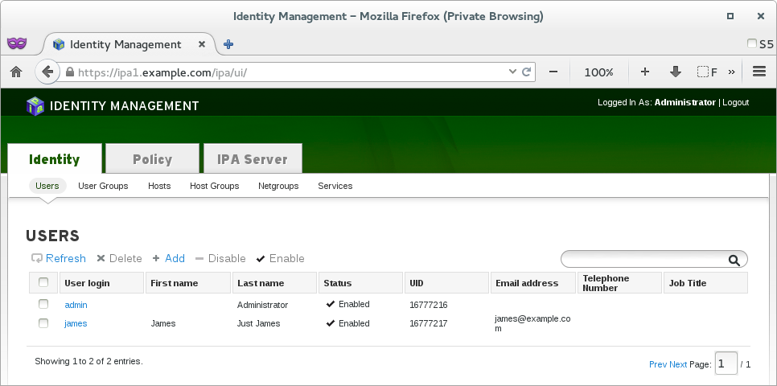

(Note: this hybrid management technique is being demonstrated in the puppet-ipa module for FreeIPA, but the idea could be used for other modules and scenarios too. See below for some use cases…)
The error message that puppet hackers are probably most familiar is:
Error: Duplicate declaration: Thing[/foo/bar] is already declared in file /tmp/baz.pp:2;
cannot redeclare at /tmp/baz.pp:4 on node computer.example.com
Typically this means that there is either a bug in your code, or someone has defined something more than once. As annoying as this might be, a compile error happens for a reason: puppet detected a problem, and it is giving you a chance to fix it, without first running code that could otherwise leave your machine in an undefined state.
The fundamental problem
The fundamental problem is that two or more contradictory declarative definitions might not be able to be properly resolved. For example, assume the following code:
package { 'awesome':
ensure => present,
}
package { 'awesome':
ensure => absent,
}
Since the above are contradictory, they can’t be reconciled, and a compiler error occurs. If they were identical, or if they would produce the same effect, then it wouldn’t be an issue, however this is not directly allowed due to a flaw in the design of puppet core. (There is an ensure_resource workaround, to be used very cautiously!)
FreeIPA types
The puppet-ipa module exposes a bunch of different types that map to FreeIPA objects. The most common are users, hosts, and services. If you run a dedicated puppet shop, then puppet can be your interface to manage FreeIPA, and life will go on as usual. The caveat is that FreeIPA provides a stunning web-ui, and a powerful cli, and it would be a shame to ignore both of these.
|  |
| The FreeIPA webui is gorgeous. It even gets better in the new 4.0 release. |
Hybrid management
As the title divulges, my puppet-ipa module actually allows hybrid management of the FreeIPA types. This means that puppet can be used in conjunction with the web-ui and the cli to create/modify/delete FreeIPA types. This took a lot of extra thought and engineering to make possible, but I think it was worth the work. This feature is optional, but if you do want to use it, you’ll need to let puppet know of your intentions. Here’s how…
Type excludes
In order to tell puppet to leave certain types alone, the main ipa::server class has type_excludes. Here is an excerpt from that code:
# special
# NOTE: host_excludes is matched with bash regexp matching in: [[ =~ ]]
# if the string regexp passed contains quotes, string matching is done:
# $string='"hostname.example.com"' vs: $regexp='hostname.example.com' !
# obviously, each pattern in the array is tried, and any match will do.
# invalid expressions might cause breakage! use this at your own risk!!
# remember that you are matching against the fqdn's, which have dots...
# a value of true, will automatically add the * character to match all.
$host_excludes = [], # never purge these host excludes...
$service_excludes = [], # never purge these service excludes...
$user_excludes = [], # never purge these user excludes...
Each of these excludes lets you specify a pattern (or an array of patterns) which will be matched against each defined type, and which, if matched, will ensure that your type is not removed if the puppet definition for it is undefined.
Currently these typeexcludes support pattern matching in <a href=“https://en.wikipedia.org/wiki/Bash(software)“>bash regexp syntax. If there is a strong demand for regexp matching in either python or ruby syntax, then I will add it. In addition, other types of exclusions could be added. If you’d like to exclude based on some types value, creation time, or some other property, these could be investigated. The important thing is to understand your use case, so that I know what is both useful and necessary.
Here is an example of some host_excludes:
class { '::ipa::server':
host_excludes => [
"'foo-42.example.com'", # exact string match
'"foo-bar.example.com"', # exact string match
"^[a-z0-9-]*\\-foo\\.example\\.com$", # *-foo.example.com or:
"^[[:alpha:]]{1}[[:alnum:]-]*\\-foo\\.example\\.com$",
"^foo\\-[0-9]{1,}\\.example\\.com" # foo-<\d>.example.com
],
}
This example and others are listed in the examples/ folder.
Type modification
Each type in puppet has a $modify parameter. The significance of this is quite simple: if this value is set to false, then puppet will not be able to modify the type. (It will be able to remove the type if it becomes undefined, which is what the type_excludes mentioned above is used for.)
This $modify parameter is particularly useful if you’d like to define your types with puppet, but allow them to be modified afterwards by either the web-ui or the cli. If you change a users phone number, and this parameter is false, then it will not be reverted by puppet. The usefulness of this field is that it allows you to define the type, so that if it is removed manually in the FreeIPA directory, then puppet will notice its absence, and re-create it with the defaults you originally defined.
Here is an example user definition that is using $modify:
ipa::server::user { 'arthur@EXAMPLE.COM':
first => 'Arthur',
last => 'Guyton',
jobtitle => 'Physiologist',
orgunit => 'Research',
#modify => true, # optional, since true is the default
}
By default, in true puppet style, the $modify parameter defaults to true. One thing to keep in mind: if you decide to update the puppet definition, then the type will get updated, which could potentially overwrite any manual change you made.
Type watching
Type watching is the strict form of type modification. As with type modification, each type has a $watch parameter. This also defaults to true. When this parameter is true, each puppet run will compare the parameters defined in puppet with what is set on the FreeIPA server. If they are different, then puppet will run a modify command so that harmony is reconciled. This is particularly useful for ensuring that the policy that you’ve defined for certain types in puppet definitions is respected.
Here’s an example:
ipa::server::host { 'nfs': # NOTE: adding .${domain} is a good idea....
domain => 'example.com',
macaddress => "00:11:22:33:44:55",
random => true, # set a one time password randomly
locality => 'Montreal, Canada',
location => '<a href="https://en.wikipedia.org/wiki/Room_641A">Room 641A</a>',
platform => 'Supermicro',
osstring => 'RHEL 6.6 x86_64',
comment => 'Simple NFSv4 Server',
watch => true, # read and understand the docs well
}
If someone were to change one of these parameters, puppet would revert it. This detection happens through an elaborate difference engine. This was mentioned briefly in an earlier article, and is probably worth looking at if you’re interested in python and function decorators.
Keep in mind that it logically follows that you must be able to $modify to be able to $watch. If you forget and make this mistake, puppet-ipa will report the error. You can however, have different values of $modify and $watch per individual type.
Use cases
With this hybrid management feature, a bunch of new use cases are now possible! Here are a few ideas:
You might want to test this all out. It’s all pretty automatic if you’ve followed along with my earlier vagrant work and my puppet-gluster work. You don’t have to use vagrant, but it’s all integrated for you in case that saves you time! The short summary is:
$ git clone --recursive https://github.com/purpleidea/puppet-ipa
$ cd puppet-ipa/vagrant/
$ vs
$ # edit puppet-ipa.yaml (although it's not necessary)
$ # edit puppet/manifests/site.pp (optionally, to add any types)
$ vup ipa1 # it can take a while to download freeipa rpm's
$ vp ipa1 # let the keepalived vip settle
$ vp ipa1 # once settled, ipa-server-install should run
$ <a href="https://gist.github.com/purpleidea/8071962#file-bashrc_vagrant-sh-L196">vfwd</a> ipa1 80:80 443:443 # if you didn't port forward before...
# echo '127.0.0.1 ipa1.example.com ipa1' >> /etc/hosts
$ firefox https://ipa1.example.com/ # accept self-sign https cert
Conclusion
Sorry that I didn’t write this article sooner. This feature has been baked in for a while now, but I simply forgot to blog about it! Since puppet-ipa is getting quite mature, it might be time for me to create some more formal documentation. Until then,
Happy hacking,
James
Your comment has been submitted and will be published if it gets approved.
Click here to see the patch you generated.
{kind=link}
Comments
Nothing yet.
Post a comment